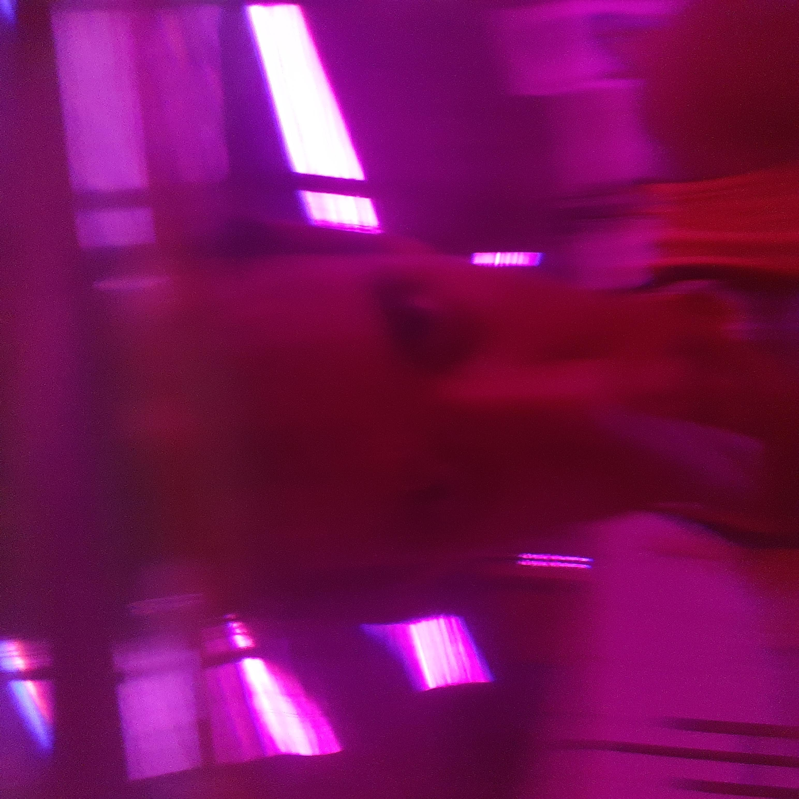

SILE
Artista visual e desenvolvedora em formação
artista independente, agora adentra o universo da programação com o objetivo do desenvolvimento de softwares
como forma de criação de memória ancestral, cyberespaços mais plurais e acessíveis.
Portfólio
Interessada desde cedo por vários campos das artes e, sobretudo, pela experimentação, sile, corpa negra e dissidente, cresceu em Vitória de Santo Antão, zona da mata do estado, e hoje cursa artes visuais - UFPE, habitando Recife/PE. Por vários atravessamentos se distanciou da arte quando deu inicrio à graduação em direito(UFPE), no processo, cofundou o Coletivo Baobá, através do qual produziu e participou de eventos com o objetivo de valorizar os saberes e cultura do povo negro. Em 2022 a artista assinou a produção executiva do projeto Corpas Daqui, subvencionado pela Lei Aldir Blanc/PE 2ª edição, programa de mentorias que culminou com a Exposição de arte “pra enfrentar o amargor”, em Vitória de Santo Antão, onde também foi uma das artistas exponentes, com curadoria de Tiago Lima. Ainda em 2022, realizou a produção cultural do projeto “Arte Pinta Periferia”, projeto também subvencionado pela Lei Aldir Blanc/PE 2ª edição, o qual realizou oficinas de pintura decolonial e customização em búzios no Vietnã, comunidade da Zona Oeste do Recife. Ainda, com produção própria, Sile foi selecionada com sua mostra “plantação // novas(?) memórias” para a exposição “Tempo, movimento e corporeidade” do 14º Salão Único de Arte Contemporânea, aberta em dezembro/2023, com curadoria de Elly Ciriaco e Moabia Anjos. De 2019 para cá a artista passou pela videoarte, pintura, videoperformance, música e gifart, de forma ascendente, autodidata(até 2022) e experimental. Atualmente, tem pesquisado sobre a corpa decolonial como criadora de memórias ancestrais, no presente, através do tempo.